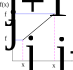

Fourier series expansion
Let \(L^{2}\left[0,2\pi\right]\) be the functional space of square integrable functions defined on the interval \(\left[0,2\pi\right]\), then Fourier series of a function \(u(x)\in L^{2}[0,2\pi]\) is given as:
\[ \mathcal{F}[u]:=a_{0}+\sum_{n=1}^{\infty}a_{n}\cos(nx)+\sum_{n=1}^{\infty}b_{n}\sin(nx) \]
where,
\[ a_{0}=\frac{1}{2\pi}\int_{0}^{2\pi}u(x)dx,\quad a_{n}=\frac{1}{\pi}\int_{0}^{2\pi}u(x)\cos(nx)dx,\quad n>0, \]
\[ b_{n}=\frac{1}{\pi}\int_{0}^{2\pi}u(x)\sin(nx)dx,\quad n>0. \]
We can also write Fourier series in complex variables by using Euler’s formula \(e^{i\theta}=\cos\theta+i\sin\theta\)
\[ \cos\theta=\frac{e^{i\theta}+e^{-i\theta}}{2},\quad\sin\theta=\frac{e^{i\theta}-e^{-i\theta}}{2i} \]
\[ \begin{aligned}\mathcal{F}[u] & :=a_{0}+\sum_{n=1}^{\infty}a_{n}\left(\frac{e^{inx}+e^{-inx}}{2}\right)+\sum_{n=1}^{\infty}b_{n}\left(\frac{e^{inx}-e^{-inx}}{2i}\right)\\ & =a_{0}+\sum_{n=1}^{\infty}\left(\frac{a_{n}-ib_{n}}{2}\right)e^{inx}++\sum_{n=1}^{\infty}\left(\frac{a_{n}+ib_{n}}{2}\right)e^{-inx}\\ & =\sum_{n=-\infty}^{\infty}c_{n}e^{inx} \end{aligned} \]
where,
\[ c_{n}=\begin{cases} a_{0} & n=0\\ \frac{a_{n}-ib_{n}}{2} & n>0\\ \frac{a_{-n}+ib_{-n}}{2} & n<0 \end{cases} \]
Key featutes:
If \(u(x)\) is a real function, then coefficients \(a_{n},b_{n}\)will be real, and \(c_{n}=c_{-n}^{*}\) (complex conjugate). Thus, only half the coefficients are needed to describe in the Fourier series.
If \(u(x)\) is real and even, then \(b_{n}=0\Rightarrow\) Cosine series
If \(u(x)\) is real and odd, then \(a_{0}=0\Rightarrow\) Sine series
Let \(L^{2}\left[0,2\pi\right]\) be a functional space of square integrable functions defined on the interval \(\left[0,2\pi\right]\), then Fourier series of a function \(u(x)\in L^{2}[0,2\pi]\) is given as:
\[ \mathcal{F}[u]:=\sum_{n=1}^{\infty}\hat{u}_{n}e^{inx} \]
\[ \hat{u}_{n}=\frac{1}{2\pi}\int_{0}^{2\pi}u(x)e^{-inx}dx \]
Let \(L^{2}\left[0,L\right]\) be a functional space of square integrable functions defined on the interval \(\left[0,L\right]\), then Fourier series of a function \(u(x)\in L^{2}[0,L]\) is given given as:
\[ \mathcal{F}[u]:=\sum_{n=1}^{\infty}\hat{u}_{n}e^{\frac{i2\pi nx}{L}} \]
\[ \hat{u}_{n}=\frac{1}{L}\int_{0}^{L}u(x)e^{-\frac{2\pi inx}{L}}dx \]
Truncated Fourier Series
Let us define a finite dimensional space \(\mathfrak{\hat{B}}_{N}\) by
\[ \mathfrak{\hat{B}}_{N}:=\text{span}\left\{ e^{inx}\vert\quad\vert n\vert\le N/2\right\} \]
- \(\mathfrak{\hat{B}}_{N}\)has \(N+1\) dimension.
- It contains \(1,\cos\left(x\right),\cos\left(2x\right),\cdots\cos\left(\frac{N}{2}x\right),\sin\left(x\right),\sin\left(2x\right),\cdots\sin\left(\frac{N}{2}x\right)\)
- Truncated Fourier series is obtained by taking projection of infinite Fourier series onto \(\mathfrak{\hat{B}}_{N}\):
\[ \mathcal{P}_{N}u(x)=\sum_{n=-N/2}^{n=N/2}\hat{u}_{n}e^{inx} \]
Theorem (Convergence of Fourier series): If \(\mathfrak{\hat{B}}_{N}\subset L^{2}\), in other words, \(\sum_{n=-N/2}^{n=N/2}\vert\hat{u}_{n}\vert^{2}<\infty\), then the truncated series converges in the \(L^{2}\) norm, that is, \(\Vert u-\mathcal{P}_{N}u\Vert_{L^{2}\left[0,2\pi\right]}\rightarrow0\text{{as}}N\rightarrow\infty\). If, moreover, \(\sum_{n=-N/2}^{n=N/2}\vert\hat{u}_{n}\vert<\infty\) then the truncated series converges uniformly, that is
\[ \Vert u-\mathcal{P}_{N}u\Vert_{L^{\infty}\left[0,2\pi\right]}\rightarrow0\text{{as}}N\rightarrow\infty \]
Corollary: The fact that the truncated series converges implies that the error is dominated by the tail of the series:
\[ \Vert u-\mathcal{P}_{N}u\Vert_{L^{2}}^{2}=2\pi\sum_{\vert n\vert>N/2}\vert\hat{u}_{n}\vert^{2} \]
and
\[ \Vert u-\mathcal{P}_{N}u\Vert_{L^{\infty}}^{2}\le\sum_{\vert n\vert>N/2}\vert\hat{u}_{n}\vert \]
Theorem: If a function \(u(x)\), its first \((m-1)\) derivatives, and their periodic extensions are all continuous and if the mth derivative of \(u(x)\) is in \(L^{2}\left[0,2\pi\right]\) , then \(\forall n\ne0\), \(\hat{u}_{n}\) decay as
\[ \vert\hat{u}_{n}\vert\propto\left(\frac{1}{n}\right)^{m} \]
Proof: The error induced by truncating a Fourier series depends solely on how fast the \(\hat{u_{n}}\)decays. This decay characteristics depends upon the regularity of \(u(x)\) in \([0,2\pi]\) and periodicity of the functions and its derivatives.
\[ \begin{split}\hat{u}_{n} & =\sum_{k=0}^{m-1}\frac{(-1)^{k}}{\left(-2\pi in\right)^{k+1}}\left(D^{k}u\vert_{2\pi}-D^{k}u\vert_{0}\right)\\ & +\frac{(-1)^{m}}{\left(-2\pi in\right)^{m}}\int_{0}^{2\pi}D^{m}ue^{-inx}dx \end{split} \]
where, \(D^{k}u=\frac{du(x)}{dx}\)
- If \(u\in C_{p}^{\infty}[0,2\pi]\) then we obtain spectral convergence
- As a thumb rule, the smoother the function, the faster the convergence of the truncated series.
Spectral convergence: \(u\in C_{p}^{\infty}[0,2\pi]\)
\[ u(x)=\frac{3}{5-4\cos(x)} \]
Nonuniform quadratic convergence:
\[ u(x)=\sin\left(\frac{x}{2}\right) \]
Derivative of truncated Fourier series
\[ \mathcal{P}_{N}u(x)=\sum_{\vert n\vert\le N/2}\hat{u}_{n}e^{inx} \]
\[ D^{(k)}\mathcal{P}_{N}u(x)=\sum_{\vert n\vert\le N/2}\left(in\right)^{k}\hat{u}_{n}e^{inx} \]
It is clear that
\[ D^{(k)}\mathcal{P}_{N}u=\mathcal{P}_{N}D^{(k)}u \]
It means that the projection of exact derivative of \(u\) is same as the derivative of projection of \(u\).
Discrete Fourier expansion
In many practical applications, Fourier coefficients cannot be evaluated in closed form due to the complex nature of function \(u(x)\). Then to compute the Fourier coefficients:
\[ \hat{u}_{n}=\frac{1}{2\pi}\int_{0}^{2\pi}u(x)e^{-inx}dx \]
numerical integration schemes are used. A typical numerical integration selects quadrature points and weights to approximate the above integral with finite summation:
\[ \hat{u}_{n}\approx\tilde{u}_{n}=\sum_{j=0}^{M}u(x_{j})e^{-inx_{j}}w_{j} \]
Trapezoidal rule
In this chapter, we will employ Trapezoidal rule due to its supreme performance and simple use.

Let \(f(x)\) be a periodic function on \([0,2\pi]\), that is \(f(0)=f(2\pi)\). Let us divide the x axis by \(N\) uniform segments, then \(x_{j}=\frac{2\pi}{N}j\) for \(j=0,1,\cdots N\), Note that \(x_{0}=0\) and \(x_{N}=2\pi\). Let \(f_{j}=f(x_{j})\), then due to periodicity, \(f_{0}=f_{N}.\) Now, consider the area of trapezoidal:
\[ \Delta A_{j}=\frac{1}{2}\left(f_{j}+f_{j+1}\right)\Delta x_{j}=\frac{1}{2}\left(f_{j}+f_{j+1}\right)\frac{2\pi}{N},\forall j=0,1,\cdots,N-1 \]
Then,
\[ \begin{aligned}\int_{0}^{2\pi}f(x)dx & =\sum_{j=0}^{N-1}\Delta A_{j}\\ & =\frac{2\pi}{N}\sum_{j=0}^{N-1}\frac{1}{2}\left(f_{j}+f_{j+1}\right)\\ & =\frac{2\pi}{N}\frac{1}{2}\left(f_{0}+f_{1+1}\right)+\frac{2\pi}{N}\sum_{j=1}^{N-2}\frac{1}{2}\left(f_{j}+f_{j+1}\right)+\frac{2\pi}{N}\frac{1}{2}\left(f_{N-1}+f_{N}\right)\\ & =\frac{2\pi}{N}\frac{1}{2}\left(f_{0}+f_{N}\right)+\frac{2\pi}{N}\sum_{j=1}^{N-1}f_{j}\\ & =\frac{2\pi}{N}\frac{1}{2}\left(f_{0}+f_{0}\right)+\frac{2\pi}{N}\sum_{j=1}^{N-1}f_{j},\quad\left(\text{due to periodicity}\right)\\ & =\frac{2\pi}{N}\sum_{j=0}^{N-1}f_{j} \end{aligned} \]
Therefore, for periodic function \(f\) over \(\left[0,2\pi\right]\), trapezoidal rule is given by:
\[ \frac{1}{2\pi}\int_{0}^{2\pi}f(x)dx=\frac{1}{M+1}\sum_{j=0}^{M}f\left(\frac{2\pi j}{M+1}\right) \]
The N point trapezoidal rule is exact for any trigonometric polynomial \(f(x)=e^{inx},\vert n\vert\le N-1\).
For even expansion (\(N\) is even) we have \(M=N-1\), and there are \(M+1=N\) (even) points. This rule is exact for \(f(x)=e^{inx},\vert n\vert\le N-1\).
For odd expansion (\(N\) is odd), we have \(M=N\), and there are \(M+1=N+1\)(even) points. This rule is exact for \(f(x)=e^{inx},\vert n\vert\le N\).
Even expansion
We consider following truncated series
\[ \mathcal{P}_{N}u(x)=\sum_{n=-N/2}^{n=N/2}\hat{u}_{n}e^{inx} \]
and its discrete counter part
\[ \mathcal{I}_{N}u(x)=\sum_{n=-N/2}^{n=N/2}\widetilde{u}_{n}e^{inx} \]
Where, \(N\) is an even number. Consider \(N\) equally spaced grid points in \([0,2\pi)\) denoted by \(x_{j}\) such that \(x_{j}=\frac{2\pi}{N}j,\quad j=0,1,2\cdots N-1\). Note that if we include \(2\pi\), then there are \(N+1\) total points (odd), and \(N\) intervals (even). Fourier coefficients are given by
\[ \hat{u}_{n}=\frac{1}{2\pi}\int_{0}^{2\pi}u\left(x\right)e^{-inx}dx,\forall\vert n\vert\le\frac{N}{2} \]
Using trapezoidal rule to calculate the Fourier coefficients:
\[ \begin{aligned}\tilde{u}_{n} & =\frac{1}{2\pi\tilde{c}_{n}}\sum_{j=0}^{N-1}u\left(x_{j}\right)e^{-inx_{j}}\frac{2\pi}{N}\\ & =\frac{1}{\tilde{c}_{n}N}\sum_{j=0}^{N-1}u\left(x_{j}\right)e^{-inx_{j}} \end{aligned} \]
where,
\[ \tilde{c}_{n}=\begin{cases} 1 & \vert n\vert<N/2\\ 2 & \vert n\vert=N/2 \end{cases} \]
The quadrature formula
\[ \frac{1}{2\pi}\int_{0}^{2\pi}f(x)dx=\frac{1}{N}\sum_{j=0}^{N-1}f(x_{j}),\quad x_{j}=\frac{2\pi}{N}j,j=0,1,\cdots,N-1 \]
is exact for any trigonometric polynomial \(f(x)=e^{inx},\vert n\vert\le N-1\), that is ,\(\hat{\mathfrak{B}}_{2N-2}\).
N points are enough for \(1,\cos(x),\cdots\cos(N-1)x,\sin(x),\cdots\sin(N-1)x\)
N points are enough for \(\sin Nx\)
N points are not enough for \(\cos Nx\)
There are only \(N\) independent discrete Fourier coefficients \(\tilde{u}_{n}\) as \(\tilde{u}_{N/2}=\tilde{u}_{-N/2}\).
Noting that
\[ \mathcal{I}_{N}\sin\left(\frac{Nx}{2}\right)=0 \]
We can say that \(\mathcal{I}_{N}\) does not project in \(\mathfrak{\hat{B}}_{N}\). Actually, it projects in \(\mathfrak{\tilde{B}}_{N}\) which is given by
\[ \tilde{\mathfrak{B}}_{N}=span\left\{ \left(\cos(nx),0\le n\le N/2\right)\cup\left(\sin\left(nx\right),1\le n\le N/2-1\right)\right\} \]
Note that \(dim\left(\mathfrak{\tilde{B}}_{N}\right)=N\) .
Due to the particular definition of \(\tilde{u}_{n}\) used in this section, \(\mathcal{I}_{N}u\) interpolates \(u\) at the quadrature nodes of the trapezoidal formula.
For the discrete Fourier transform considered in this section we have
\[ \mathcal{I}_{N}u(x_{j})=u(x_{j}),\quad\forall x_{j}=\frac{2\pi j}{N},j=0,1,\cdots,N-1 \]
or
\[ \mathcal{I}_{N}u(x)=\sum_{j=0}^{N-1}u(x_{j})g_{j}(x) \]
\[ \begin{split}g_{j}(x) & =\sum_{\vert n\vert\le N/2}\frac{1}{N\tilde{c}_{n}}e^{in(x-x_{j})}\\ & =\frac{1}{N}\sin\left(N\frac{x-x_{j}}{2}\right)\cot\left(\frac{x-x_{j}}{2}\right) \end{split} \]
Odd expansion
Let \(N\) be odd, then we select \(N+1\) (even) points
\[ x_{j}=\frac{2\pi}{N+1}j,j=0,1,2,\cdots,N \]
Note that if we include \(2\pi\), then there are \(N+2\) (odd) points, and \(N+1\) (even) intervals. By Using trapezoidal rule to calculate the Fourier coefficients:
\[ \begin{aligned}\tilde{u}_{n} & =\frac{1}{2\pi}\sum_{j=0}^{N}u\left(x_{j}\right)e^{-inx_{j}}\frac{2\pi}{N+1}\\ & =\frac{1}{N+1}\sum_{j=0}^{N}u\left(x_{j}\right)e^{-inx_{j}} \end{aligned} \]
Discrete Fourier interpolation is given by
\[ \mathcal{I}_{N}u\left(x\right)=\sum_{\vert n\vert\le N/2}\tilde{u}_{n}e^{inx} \]
The quadrature formula is exact for \(\vert n\vert\le N\). Which means it can compute the following inner product exactly:
\[ \frac{1}{2\pi}\int_{0}^{2\pi}f(x)g(x)dx=\frac{1}{N+1}\sum_{j=0}^{N}f(x_{j})g(x_{j}) \]
where, \(f,g\in\mathfrak{B}_{N}.\)
Lagrange interpolation form (cardinal functions)
\[ \mathcal{I}_{N}u\left(x\right)=\sum_{j=0}^{N}u\left(x_{j}\right)l_{j}\left(x\right) \]
where,
\[ l_{j}\left(x\right)=\frac{1}{N+1}\frac{sin\left[\frac{N+1}{2}\left(x-x_{j}\right)\right]}{sin\left(\frac{x-x_{j}}{2}\right)} \]
Note that \(l_{j}\left(x\right)\) is a \(N\)th order polynomial in sine.
Aliasing error
TODO
Differentiation
\[ \frac{d}{dx}\mathcal{I}_{N}u(x)=\sum_{\vert n\vert\le N/2}in\tilde{u}_{n}e^{inx} \]
where
\[ \tilde{u}_{n}=\frac{1}{N\tilde{c}_{n}}\sum_{j=0}^{N-1}u(x_{j})e^{-inx_{j}} \]
Note that
\[ \mathcal{I}_{N}\frac{du}{dx}\ne\mathcal{I_{N}}\frac{d}{dx}\mathcal{I}_{N}u,\quad\text{{except}}if\quad u\in\hat{\mathfrak{B}}_{N} \]
Discrete inner product
Let us consider functions \(f,g\in L^{2}(\left[0,2\pi\right])\), and define following approximations:
\[ f_{N}(x)=\mathcal{P}_{N}f:=\sum_{\vert n\vert\le N/2}f(x)e^{inx} \]
\[ g_{N}(x)=\mathcal{P}_{N}g:=\sum_{\vert n\vert\le N/2}g(x)e^{inx} \]
Note: \(f_{N},g_{N}\in\mathfrak{\hat{B}}_{N}\).
Then, the continuous inner product is defined by
\[ \left(f_{N},g_{N}\right):=\frac{1}{2\pi}\int_{0}^{2\pi}f_{N}(x)\bar{g}_{N}(x)dx \]
Note: \(f_{N}g_{N}\in\mathfrak{\hat{B}}_{2N}\).
The discrete inner product (for odd expansion) is given by:
\[ \left(f_{N},g_{N}\right)_{N}:=\frac{1}{N+1}\sum_{j=0}^{N}f_{N}(x_{j})\bar{g}_{N}(x_{j}) \]
\[ \Vert f_{N}\Vert_{N}^{2}=\left(f_{N},f_{N}\right)_{N} \]
In the case of odd expansion \(N+1\) points are accurate for \(f(x)=e^{inx},\vert n\vert\le N\). Therefore,
\[ \frac{1}{2\pi}\int_{0}^{2\pi}f_{N}(x)\bar{g}_{N}(x)dx=\left(f_{N},g_{N}\right)_{N}:=\frac{1}{N+1}\sum_{j=0}^{N}f_{N}(x_{j})\bar{g}_{N}(x_{j}) \]
However, in the case of even expansion the situation is different:
In the case of even expansion \(N\) points are accurate for \(f(x)=e^{inx},\vert n\vert\le N-1\), that is, \(f\in\hat{\mathfrak{\mathfrak{B}}}_{2N-2}\). Moreover, \(N\) points are sufficient for \(\sin Nx\) but not for \(\cos Nx\). Therefore, if \(f_{N},g_{N}\in\mathfrak{\hat{B}}_{N}\), then
\[ \frac{1}{2\pi}\int_{0}^{2\pi}f_{N}(x)\bar{g}_{N}(x)dx\ne\left(f_{N},g_{N}\right)_{N}:=\frac{1}{N}\sum_{j=0}^{N-1}f_{N}(x_{j})\bar{g}_{N}(x_{j}) \]
However, we can show that the continuous and discrete norms are uniformly equivalent.
\[ \frac{1}{K}\Vert f_{N}\Vert_{L^{2}[0,2\pi]}^{2}\le\Vert f_{N}\Vert_{N}^{2}\le K\Vert f_{N}\Vert_{L^{2}[0,2\pi]}^{2} \]